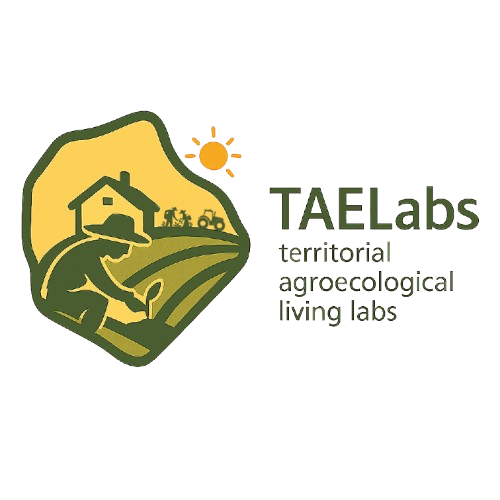
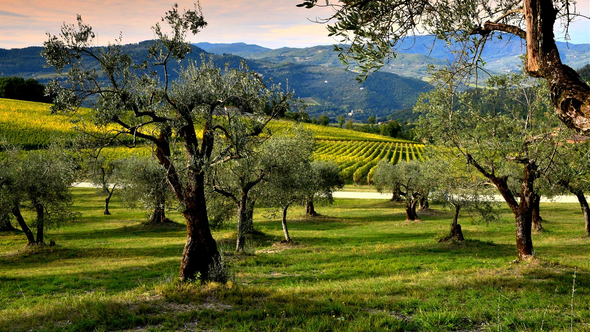

Identifying models and co-creating solutions to promote the agroecological transition across Europe
Territorial AgroEcological Labs (TAELabs) aims to identify models, co-design and co-create solutions to support the agroecological transition while respecting the diversity and specific needs of different European territories.
The project is grounded in assemblage theory and adopts a transversal and transdisciplinary co-design approach throughout all stages of its development. TAELabs seeks to develop adaptable models that can be applied across diverse European contexts by actively involving local actors and stakeholders, including farmers and farmers' associations, public authorities, non-governmental organisations and consumers.
The project addresses the agroecological transition through three interrelated dimensions: ecological and biophysical systems, socio-economic dynamics, and collaborative governance and food policy frameworks.
